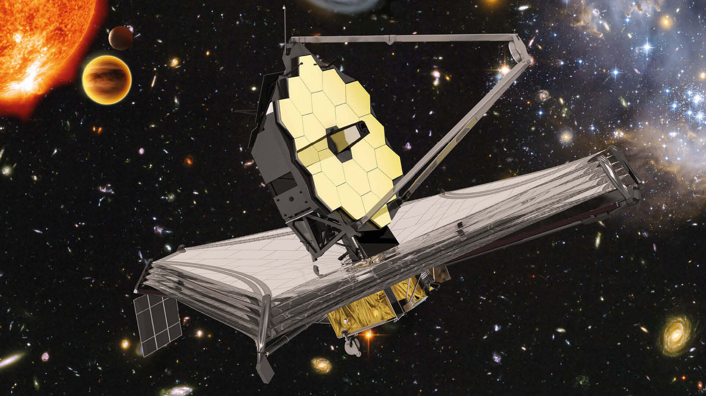

Este site foi desenvolvido com o objetivo de apresentar informações sobre o telescópio espacial James Webb e sua importância para a astronomia moderna.
A proposta é divulgar conteúdos científicos de forma simples e acessível, permitindo que mais pessoas entendam como funciona a exploração do universo e os avanços da tecnologia espacial.
As informações apresentadas são baseadas em fontes jornalísticas e científicas, como reportagens da CNN, além de dados de instituições de pesquisa.

O projeto busca aproximar o público da ciência, mostrando como ferramentas como o James Webb ajudam a expandir nosso conhecimento sobre o universo.